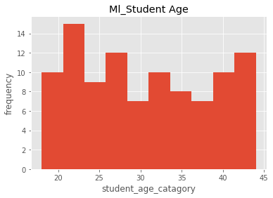
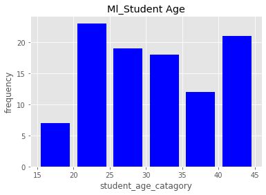
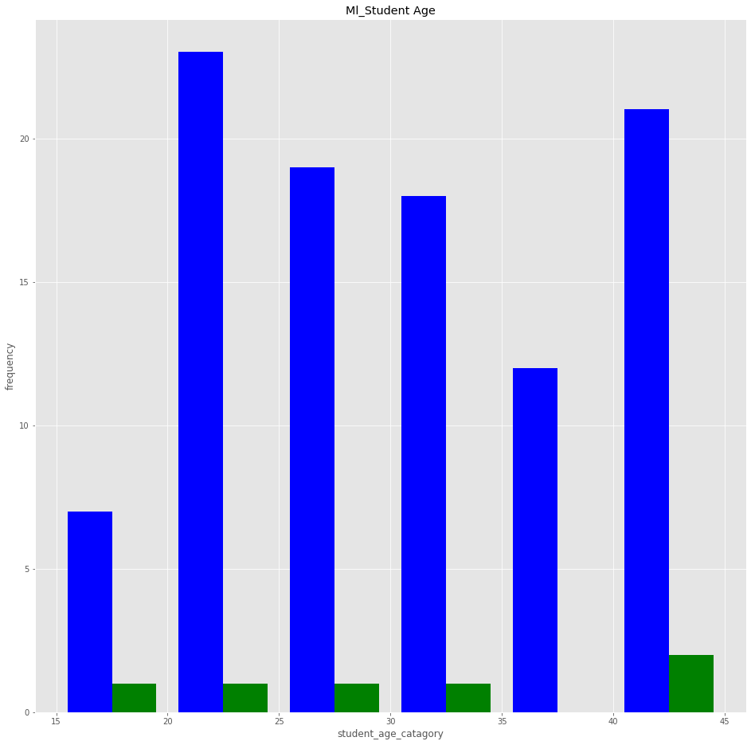

Matplotlib¶
import matplotlib.pyplot as plt
Line Plot¶
import matplotlib.pyplot as plt
days=[1,2,3,4,5,6,7,8,9]
temperature=[34.5,34.2,28.6,35.7,30,35,33,32,34]
plt.plot(days,temperature)
plt.title("Delhi Temp")
plt.xlabel("Days")
plt.ylabel("Temperature")
plt.show()
days=[1,2,3,4,5,6,7,8,9]
temperature=[34.5,34.2,28.6,35.7,30,35,33,32,34]
plt.plot(days,temperature)
plt.axis([0,9 ,0,50])
plt.title("Delhi Temp")
plt.xlabel("Days")
plt.ylabel("Temperature")
plt.show()
days=[1,2,3,4,5,6,7,8,9]
temperature=[34.5,34.2,28.6,35.7,30,35,33,32,34]
plt.plot(days,temperature, color="r", marker="o", linestyle=":", linewidth=3, markersize=3)
plt.axis([0,9 ,0,50])
plt.title("Delhi Temp")
plt.xlabel("Days")
plt.ylabel("Temperature")
plt.show()
days=[1,2,3,4,5,6,7,8,9]
temperature=[34.5,34.2,28.6,35.7,30,35,33,32,34]
plt.plot(days,temperature, "o--")
plt.axis([0,9 ,0,50])
plt.title("Delhi Temp", fontsize=15)
plt.xlabel("Days")
plt.ylabel("Temperature")
plt.legend(["Temp Line"], loc=4)
plt.show()
from matplotlib import style
days=[1,2,3,4,5,6,7,8,9]
temperature=[34.5,34.2,28.6,35.7,30,35,33,32,34]
style.use("ggplot")
plt.plot(days,temperature, "r-")
plt.axis([0,9 ,0,50])
plt.title("Delhi Temp", fontsize=15)
plt.xlabel("Days")
plt.ylabel("Temperature")
plt.legend(["Temp Line"], loc=4)
plt.grid(color='b', linestyle='-', linewidth=2)
plt.show()
days=[1,2,3,4,5,6,7,8,9]
delhi_temperature=[34.5,34.2,28.6,35.7,30,35,33,32,34]
mumbai_temperature=[34,35,39,37,33,35,33,40,37]
style.use("ggplot")
plt.plot(days,delhi_temperature, "r-", label="Delhi_Temp")
plt.plot(days,mumbai_temperature,"g--", label="Mumbai_temp")
plt.axis([0,9 ,0,50])
plt.title("Delhi Temp", fontsize=15)
plt.xlabel("Days")
plt.ylabel("Temperature")
plt.legend(loc=4)
plt.grid(color='b', linestyle='-', linewidth=2)
plt.show()
Histogram¶
import matplotlib.pyplot as plt
import numpy as np
import random
ml_student_age= np.random.randint(18,45, (100))
py_student_age= np.random.randint(15,440, (100))
print(ml_student_age)
print(py_student_age)
[23 43 27 19 42 18 20 18 27 27 21 39 33 24 32 40 35 30 22 42 37 44 36 25
24 18 29 24 37 38 28 22 39 31 24 33 23 36 32 41 26 39 33 41 40 25 42 31
28 30 19 36 19 26 18 19 35 34 44 33 19 44 23 19 28 26 36 35 31 24 41 42
44 33 39 42 28 36 19 25 30 43 27 30 24 29 37 26 39 18 34 43 19 32 19 37
20 29 35 30]
[260 183 340 60 115 421 174 18 96 139 356 308 288 342 168 233 157 68
59 286 191 22 123 195 278 57 320 390 70 143 29 237 57 375 187 368
221 426 106 264 128 65 239 89 333 256 325 85 261 61 238 228 89 86
42 223 60 387 251 163 73 41 375 140 261 171 163 279 65 111 371 340
329 114 221 60 156 135 289 44 429 403 360 351 428 254 172 39 71 157
189 265 161 97 421 328 367 153 110 92]
plt.hist(ml_student_age)
plt.title("Ml_Student Age")
plt.xlabel("student_age_catagory")
plt.ylabel("frequency")
plt.show()

bins=[15,20,25,30,35,40,45]
plt.hist(ml_student_age, bins,rwidth=0.8, histtype="bar",color="b")
plt.title("Ml_Student Age")
plt.xlabel("student_age_catagory")
plt.ylabel("frequency")
plt.show()

bins=[15,20,25,30,35,40,45]
plt.figure(figsize=(16,16))
plt.hist([ml_student_age,py_student_age], bins,rwidth=0.8, histtype="bar",color=["b","g"], label=["ML_Student","Py_Student"])
plt.title("Ml_Student Age")
plt.xlabel("student_age_catagory")
plt.ylabel("frequency")
plt.show()

from matplotlib import style
style.use("ggplot")
bins=[15,20,25,30,35,40,45]
plt.figure(figsize=(16,16))
plt.hist([ml_student_age,py_student_age], bins,rwidth=0.8, histtype="bar",color=["b","g"], label=["ML_Student","Py_Student"])
plt.title("Ml_Student Age")
plt.xlabel("student_age_catagory")
plt.ylabel("frequency")
plt.show()

Barchart¶
import matplotlib.pyplot as plt
import numpy as np
from matplotlib import style
# Dataset of 'Indian Artificial Intelligence Production (IAIP) Class"
#classes = ["Python", "R", "Artificial Intelligence", "Machine Learning", "Data Science"]
classes = ["Python", "R", "AI", "ML", "DS"]
class1_students = [30, 10, 20, 25, 10] # out of 100 student in each class
class2_students = [40, 5, 20, 20, 10]
class3_students = [35, 5, 30, 15, 15]
plt.bar(classes, class1_students)
<BarContainer object of 5 artists>

plt.bar(classes, class1_students, width=0.2, align="edge", color="y",edgecolor="m", linewidth=5, alpha=0.9, linestyle="--",label="class1 students")
<BarContainer object of 5 artists>
style.use("ggplot")
plt.figure(figsize=(16,9)) # figure size with ratio 16:9
plt.bar(classes, class1_students, width = 0.6, align = "edge", color = "k",
edgecolor = "m", linewidth = 5, alpha = 0.9, linestyle = "--",
label =" Class 1 Students")
<BarContainer object of 5 artists>
plt.figure(figsize=(16,9))
plt.barh(classes, class1_students, align = "edge", color = "k",
edgecolor = "m", linewidth = 5, alpha = 0.9, linestyle = "--",
label =" Class 1 Students")
<BarContainer object of 5 artists>
plt.figure(figsize=(16,9))
plt.bar(classes, class1_students, width = 0.6, align = "edge", color = "k",
edgecolor = "m", linewidth = 5, alpha = 0.9, linestyle = "--",
label =" Class 1 Students")
plt.title("Bar Chart of IAIP Class", fontsize = 18)
plt.xlabel("Classes",fontsize = 15)
plt.ylabel("No. of Students", fontsize = 15)
plt.show()
plt.figure(figsize=(16,9))
plt.bar(classes, class1_students, width = 0.2, color = "b",
label =" Class 1 Students")
plt.bar(classes, class2_students, width = 0.2, color = "g",
label =" Class 2 Students")
plt.title("Bar Chart of IAIP Class", fontsize = 18)
plt.xlabel("Classes",fontsize = 15)
plt.ylabel("No. of Students", fontsize = 15)
plt.show()
plt.figure(figsize=(16,9))
classes_index = np.arange(len(classes))
width = 0.2
plt.bar(classes_index, class1_students, width , color = "b",
label =" Class 1 Students")
plt.bar(classes_index + width, class2_students, width , color = "g",
label =" Class 2 Students")
plt.bar(classes_index + width + width, class3_students, width , color = "y",
label =" Class 2 Students")
plt.xticks(classes_index + width, classes, rotation = 20)
plt.title("Bar Chart of IAIP Class", fontsize = 18)
plt.xlabel("Classes",fontsize = 15)
plt.ylabel("No. of Students", fontsize = 15)
plt.show()
plt.figure(figsize=(16,9))
classes_index = np.arange(len(classes))
width = 0.2
plt.barh(classes_index, class1_students, width , color = "b",
label =" Class 1 Students")
plt.barh(classes_index + width, class2_students, width , color = "g",
label =" Class 2 Students")
plt.barh(classes_index + width + width, class3_students, width , color = "y",
label =" Class 3 Students")
plt.yticks(classes_index + width, classes, rotation = 20)
plt.title("Bar Chart of IAIP Class", fontsize = 18)
plt.ylabel("Classes",fontsize = 15)
plt.xlabel("No. of Students", fontsize = 15)
plt.legend()
plt.show()
Piechart¶
import matplotlib.pyplot as plt
import pandas as pd
classes = ["Python", 'R', 'Machine Learning', 'Artificial Intelligence',
'Data Science']
class1_students = [45, 15, 35, 25, 30]
plt.pie([1])
plt.show()
classes = ["Python", 'R', 'Machine Learning', 'Artificial Intelligence',
'Data Science']
class1_students = [45, 15, 35, 25, 30]
plt.pie(class1_students, labels=classes)
plt.show()
'''plt.pie(
x,
explode=None,
labels=None,
colors=None,
autopct=None,
pctdistance=0.6,
shadow=False,
labeldistance=1.1,
startangle=0,
radius=1,
counterclock=True,
wedgeprops=None,
textprops=None,
center=(0, 0),
frame=False,
rotatelabels=False,
*,
normalize=None,
data=None,
)
Docstring:
Plot a pie chart.
Make a pie chart of array *x*. The fractional area of each wedge is
given by ``x/sum(x)``. If ``sum(x) < 1``, then the values of *x* give
the fractional area directly and the array will not be normalized. The
resulting pie will have an empty wedge of size ``1 - sum(x)``.
The wedges are plotted counterclockwise, by default starting from the
x-axis.
Parameters
----------
x : 1D array-like
The wedge sizes.
explode : array-like, default: None
If not *None*, is a ``len(x)`` array which specifies the fraction
of the radius with which to offset each wedge.
labels : list, default: None
A sequence of strings providing the labels for each wedge
colors : array-like, default: None
A sequence of colors through which the pie chart will cycle. If
*None*, will use the colors in the currently active cycle.
autopct : None or str or callable, default: None
If not *None*, is a string or function used to label the wedges
with their numeric value. The label will be placed inside the
wedge. If it is a format string, the label will be ``fmt % pct``.
If it is a function, it will be called.
pctdistance : float, default: 0.6
The ratio between the center of each pie slice and the start of
the text generated by *autopct*. Ignored if *autopct* is *None*.
shadow : bool, default: False
Draw a shadow beneath the pie.
normalize: None or bool, default: None
When *True*, always make a full pie by normalizing x so that
``sum(x) == 1``. *False* makes a partial pie if ``sum(x) <= 1``
and raises a `ValueError` for ``sum(x) > 1``.
When *None*, defaults to *True* if ``sum(x) >= 1`` and *False* if
``sum(x) < 1``.
Please note that the previous default value of *None* is now
deprecated, and the default will change to *True* in the next
release. Please pass ``normalize=False`` explicitly if you want to
draw a partial pie.
labeldistance : float or None, default: 1.1
The radial distance at which the pie labels are drawn.
If set to ``None``, label are not drawn, but are stored for use in
``legend()``
startangle : float, default: 0 degrees
The angle by which the start of the pie is rotated,
counterclockwise from the x-axis.
radius : float, default: 1
The radius of the pie.
counterclock : bool, default: True
Specify fractions direction, clockwise or counterclockwise.
wedgeprops : dict, default: None
Dict of arguments passed to the wedge objects making the pie.
For example, you can pass in ``wedgeprops = {'linewidth': 3}``
to set the width of the wedge border lines equal to 3.
For more details, look at the doc/arguments of the wedge object.
By default ``clip_on=False``.
textprops : dict, default: None
Dict of arguments to pass to the text objects.
center : (float, float), default: (0, 0)
The coordinates of the center of the chart.
frame : bool, default: False
Plot axes frame with the chart if true.
rotatelabels : bool, default: False
Rotate each label to the angle of the corresponding slice if true.
Returns
-------
patches : list
A sequence of `matplotlib.patches.Wedge` instances
texts : list
A list of the label `.Text` instances.
autotexts : list
A list of `.Text` instances for the numeric labels. This will only
be returned if the parameter *autopct* is not *None*.
Notes
-----
The pie chart will probably look best if the figure and axes are
square, or the Axes aspect is equal.
This method sets the aspect ratio of the axis to "equal".
The axes aspect ratio can be controlled with `.Axes.set_aspect`.
.. note::
In addition to the above described arguments, this function can take
a *data* keyword argument. If such a *data* argument is given,
the following arguments can also be string ``s``, which is
interpreted as ``data[s]`` (unless this raises an exception):
*x*, *explode*, *labels*, *colors*.'''
'plt.pie(\n x,\n explode=None,\n labels=None,\n colors=None,\n autopct=None,\n pctdistance=0.6,\n shadow=False,\n labeldistance=1.1,\n startangle=0,\n radius=1,\n counterclock=True,\n wedgeprops=None,\n textprops=None,\n center=(0, 0),\n frame=False,\n rotatelabels=False,\n *,\n normalize=None,\n data=None,\n)\nDocstring:\nPlot a pie chart.\n\nMake a pie chart of array *x*. The fractional area of each wedge is\ngiven by ``x/sum(x)``. If ``sum(x) < 1``, then the values of *x* give\nthe fractional area directly and the array will not be normalized. The\nresulting pie will have an empty wedge of size ``1 - sum(x)``.\n\nThe wedges are plotted counterclockwise, by default starting from the\nx-axis.\n\nParameters\n----------\nx : 1D array-like\n The wedge sizes.\n\nexplode : array-like, default: None\n If not *None*, is a ``len(x)`` array which specifies the fraction\n of the radius with which to offset each wedge.\n\nlabels : list, default: None\n A sequence of strings providing the labels for each wedge\n\ncolors : array-like, default: None\n A sequence of colors through which the pie chart will cycle. If\n *None*, will use the colors in the currently active cycle.\n\nautopct : None or str or callable, default: None\n If not *None*, is a string or function used to label the wedges\n with their numeric value. The label will be placed inside the\n wedge. If it is a format string, the label will be ``fmt % pct``.\n If it is a function, it will be called.\n\npctdistance : float, default: 0.6\n The ratio between the center of each pie slice and the start of\n the text generated by *autopct*. Ignored if *autopct* is *None*.\n\nshadow : bool, default: False\n Draw a shadow beneath the pie.\n\nnormalize: None or bool, default: None\n When *True*, always make a full pie by normalizing x so that\n ``sum(x) == 1``. *False* makes a partial pie if ``sum(x) <= 1``\n and raises a `ValueError` for ``sum(x) > 1``.\n\n When *None*, defaults to *True* if ``sum(x) >= 1`` and *False* if\n ``sum(x) < 1``.\n\n Please note that the previous default value of *None* is now\n deprecated, and the default will change to *True* in the next\n release. Please pass ``normalize=False`` explicitly if you want to\n draw a partial pie.\n\nlabeldistance : float or None, default: 1.1\n The radial distance at which the pie labels are drawn.\n If set to ``None``, label are not drawn, but are stored for use in\n ``legend()``\n\nstartangle : float, default: 0 degrees\n The angle by which the start of the pie is rotated,\n counterclockwise from the x-axis.\n\nradius : float, default: 1\n The radius of the pie.\n\ncounterclock : bool, default: True\n Specify fractions direction, clockwise or counterclockwise.\n\nwedgeprops : dict, default: None\n Dict of arguments passed to the wedge objects making the pie.\n For example, you can pass in ``wedgeprops = {\'linewidth\': 3}``\n to set the width of the wedge border lines equal to 3.\n For more details, look at the doc/arguments of the wedge object.\n By default ``clip_on=False``.\n\ntextprops : dict, default: None\n Dict of arguments to pass to the text objects.\n\ncenter : (float, float), default: (0, 0)\n The coordinates of the center of the chart.\n\nframe : bool, default: False\n Plot axes frame with the chart if true.\n\nrotatelabels : bool, default: False\n Rotate each label to the angle of the corresponding slice if true.\n\nReturns\n-------\npatches : list\n A sequence of `matplotlib.patches.Wedge` instances\n\ntexts : list\n A list of the label `.Text` instances.\n\nautotexts : list\n A list of `.Text` instances for the numeric labels. This will only\n be returned if the parameter *autopct* is not *None*.\n\nNotes\n-----\nThe pie chart will probably look best if the figure and axes are\nsquare, or the Axes aspect is equal.\nThis method sets the aspect ratio of the axis to "equal".\nThe axes aspect ratio can be controlled with `.Axes.set_aspect`.\n\n.. note::\n In addition to the above described arguments, this function can take\n a *data* keyword argument. If such a *data* argument is given,\n the following arguments can also be string ``s``, which is\n interpreted as ``data[s]`` (unless this raises an exception):\n *x*, *explode*, *labels*, *colors*.'
classes = ["Python", 'R', 'Machine Learning', 'Artificial Intelligence',
'Data Science']
class1_students = [45, 15, 35, 25, 30]
explode = [0.03,0,0.1,0,0] # To slice the perticuler section
colors = ["c", 'b','r','y','g'] # Color of each section
textprops = {"fontsize":15} # Font size of text in pie chart
plt.pie(class1_students, # Values
labels = classes, # Labels for each sections
explode = explode, # To slice the perticuler section
colors =colors, # Color of each section
autopct = "%0.2f%%", # Show data in persentage for with 2 decimal point
shadow = True, # Showing shadow of pie chart
radius = 1.4, # Radius to increase or decrease the size of pie chart
startangle = 270, # Start angle of first section
textprops =textprops)
plt.show() # To show pie chart only

plt.figure(figsize = (3,2))
wedgeprops = {"linewidth": 4, 'width':1, "edgecolor":"k"} # Width = 1
plt.pie(
class1_students,
labels = classes,
explode = explode,
colors = colors,
autopct = "%0.2f%%",
pctdistance = 0.6,
shadow =True,
labeldistance = 1.6,
startangle = 270,
radius = 1,
counterclock = True,
wedgeprops = wedgeprops,
textprops = textprops,
center=(2, 3),
frame=True,
rotatelabels=True
)
plt.show()
classes = ["Python", 'R', 'Machine Learning', 'Artificial Intelligence',
'Data Science']
class1_students = [45, 15, 35, 25, 30]
explode = [0.03,0,0.1,0,0] # To slice the perticuler section
colors = ["c", 'b','r','y','g'] # Color of each section
textprops = {"fontsize":15} # Font size of text in pie chart
plt.pie(class1_students, # Values
labels = classes, # Labels for each sections
explode = explode, # To slice the perticuler section
colors =colors, # Color of each section
autopct = "%0.2f%%", # Show data in persentage for with 2 decimal point
shadow = True, # Showing shadow of pie chart
radius = 1.4, # Radius to increase or decrease the size of pie chart
startangle = 270, # Start angle of first section
textprops =textprops)
plt.legend()
plt.show() # To show pie chart only
Subplot¶
import matplotlib.pyplot as plt
import numpy as np
import pandas as pd
import random
from matplotlib import style
plt.subplot(2,2,1)
plt.pie([1])
plt.subplot(2,2,2)
plt.pie([1,2])
plt.subplot(2,2,3)
plt.pie([1,2,3])
plt.subplot(2,2,4)
plt.pie([1,2,3,4])
plt.show()
plt.figure(figsize=(16,9))
#plt.subplot(3,2,1)
plt.subplot(321)
days=[1,2,3,4,5,6,7,8,9]
delhi_temperature=[34.5,34.2,28.6,35.7,30,35,33,32,34]
mumbai_temperature=[34,35,39,37,33,35,33,40,37]
style.use("ggplot")
plt.plot(days,delhi_temperature, "r-", label="Delhi_Temp")
plt.plot(days,mumbai_temperature,"g--", label="Mumbai_temp")
plt.axis([0,9 ,0,50])
plt.title("Delhi Temp", fontsize=15)
plt.xlabel("Days")
plt.ylabel("Temperature")
plt.legend(loc=4)
plt.grid(color='b', linestyle='-', linewidth=2)
plt.subplot(3,2,2)
plt.figure(figsize=(16,9))
plt.bar(classes, class1_students, width = 0.2, color = "b",
label =" Class 1 Students")
plt.bar(classes, class2_students, width = 0.2, color = "g",
label =" Class 2 Students")
plt.title("Bar Chart of IAIP Class", fontsize = 18)
plt.xlabel("Classes",fontsize = 15)
plt.ylabel("No. of Students", fontsize = 15)
plt.subplot(3,2,3)
plt.subplot(3,2,4)
plt.subplot(3,2,5)
plt.subplot(3,2,6)
plt.show()

Matplotlib Savefig¶
import matplotlib.pyplot as plt
plt.pie([40,30,20])
plt.show
plt.savefig("piechart")

plt.pie([40,30,20])
plt.savefig("piechart", # file name
dpi = 100, # dot per inch for resolution increase value for more resolution
quality = 99, # "1 <= value <= 100" 100 for best qulity
facecolor = "g" # image background color
)
plt.show()
/opt/hostedtoolcache/Python/3.7.10/x64/lib/python3.7/site-packages/ipykernel_launcher.py:5: MatplotlibDeprecationWarning: savefig() got unexpected keyword argument "quality" which is no longer supported as of 3.3 and will become an error two minor releases later
"""

Matplotlib Imshow – Read & Show Image Using Imread() & Plt.Imshow()¶
import matplotlib.pyplot as plt
import matplotlib.image as mpimg
img= mpimg.imread("piechart.png")
img
array([[[0. , 0.5019608, 0. , 1. ],
[0. , 0.5019608, 0. , 1. ],
[0. , 0.5019608, 0. , 1. ],
...,
[0. , 0.5019608, 0. , 1. ],
[0. , 0.5019608, 0. , 1. ],
[0. , 0.5019608, 0. , 1. ]],
[[0. , 0.5019608, 0. , 1. ],
[0. , 0.5019608, 0. , 1. ],
[0. , 0.5019608, 0. , 1. ],
...,
[0. , 0.5019608, 0. , 1. ],
[0. , 0.5019608, 0. , 1. ],
[0. , 0.5019608, 0. , 1. ]],
[[0. , 0.5019608, 0. , 1. ],
[0. , 0.5019608, 0. , 1. ],
[0. , 0.5019608, 0. , 1. ],
...,
[0. , 0.5019608, 0. , 1. ],
[0. , 0.5019608, 0. , 1. ],
[0. , 0.5019608, 0. , 1. ]],
...,
[[0. , 0.5019608, 0. , 1. ],
[0. , 0.5019608, 0. , 1. ],
[0. , 0.5019608, 0. , 1. ],
...,
[0. , 0.5019608, 0. , 1. ],
[0. , 0.5019608, 0. , 1. ],
[0. , 0.5019608, 0. , 1. ]],
[[0. , 0.5019608, 0. , 1. ],
[0. , 0.5019608, 0. , 1. ],
[0. , 0.5019608, 0. , 1. ],
...,
[0. , 0.5019608, 0. , 1. ],
[0. , 0.5019608, 0. , 1. ],
[0. , 0.5019608, 0. , 1. ]],
[[0. , 0.5019608, 0. , 1. ],
[0. , 0.5019608, 0. , 1. ],
[0. , 0.5019608, 0. , 1. ],
...,
[0. , 0.5019608, 0. , 1. ],
[0. , 0.5019608, 0. , 1. ],
[0. , 0.5019608, 0. , 1. ]]], dtype=float32)
type(img)
numpy.ndarray
img.shape
(400, 600, 4)
img.ndim
3
plt.axis("off")
plt.imshow(img)
plt.show()
plt.axis("off")
plt.imshow(img)
plt.colorbar()
plt.show()
plt.axis("off")
plt.imshow(img, cmap="mc")
plt.colorbar()
plt.show()
---------------------------------------------------------------------------
ValueError Traceback (most recent call last)
<ipython-input-47-bd08e95bd3f6> in <module>
1 plt.axis("off")
----> 2 plt.imshow(img, cmap="mc")
3 plt.colorbar()
4 plt.show()
/opt/hostedtoolcache/Python/3.7.10/x64/lib/python3.7/site-packages/matplotlib/pyplot.py in imshow(X, cmap, norm, aspect, interpolation, alpha, vmin, vmax, origin, extent, filternorm, filterrad, resample, url, data, **kwargs)
2907 filternorm=filternorm, filterrad=filterrad, resample=resample,
2908 url=url, **({"data": data} if data is not None else {}),
-> 2909 **kwargs)
2910 sci(__ret)
2911 return __ret
/opt/hostedtoolcache/Python/3.7.10/x64/lib/python3.7/site-packages/matplotlib/__init__.py in inner(ax, data, *args, **kwargs)
1359 def inner(ax, *args, data=None, **kwargs):
1360 if data is None:
-> 1361 return func(ax, *map(sanitize_sequence, args), **kwargs)
1362
1363 bound = new_sig.bind(ax, *args, **kwargs)
/opt/hostedtoolcache/Python/3.7.10/x64/lib/python3.7/site-packages/matplotlib/axes/_axes.py in imshow(self, X, cmap, norm, aspect, interpolation, alpha, vmin, vmax, origin, extent, filternorm, filterrad, resample, url, **kwargs)
5605 im = mimage.AxesImage(self, cmap, norm, interpolation, origin, extent,
5606 filternorm=filternorm, filterrad=filterrad,
-> 5607 resample=resample, **kwargs)
5608
5609 im.set_data(X)
/opt/hostedtoolcache/Python/3.7.10/x64/lib/python3.7/site-packages/matplotlib/image.py in __init__(self, ax, cmap, norm, interpolation, origin, extent, filternorm, filterrad, resample, **kwargs)
907 filterrad=filterrad,
908 resample=resample,
--> 909 **kwargs
910 )
911
/opt/hostedtoolcache/Python/3.7.10/x64/lib/python3.7/site-packages/matplotlib/image.py in __init__(self, ax, cmap, norm, interpolation, origin, filternorm, filterrad, resample, **kwargs)
242 ):
243 martist.Artist.__init__(self)
--> 244 cm.ScalarMappable.__init__(self, norm, cmap)
245 if origin is None:
246 origin = mpl.rcParams['image.origin']
/opt/hostedtoolcache/Python/3.7.10/x64/lib/python3.7/site-packages/matplotlib/cm.py in __init__(self, norm, cmap)
261 self.set_norm(norm) # The Normalize instance of this ScalarMappable.
262 self.cmap = None # So that the setter knows we're initializing.
--> 263 self.set_cmap(cmap) # The Colormap instance of this ScalarMappable.
264 #: The last colorbar associated with this ScalarMappable. May be None.
265 self.colorbar = None
/opt/hostedtoolcache/Python/3.7.10/x64/lib/python3.7/site-packages/matplotlib/cm.py in set_cmap(self, cmap)
430 """
431 in_init = self.cmap is None
--> 432 cmap = get_cmap(cmap)
433 self.cmap = cmap
434 if not in_init:
/opt/hostedtoolcache/Python/3.7.10/x64/lib/python3.7/site-packages/matplotlib/cm.py in get_cmap(name, lut)
188 if isinstance(name, colors.Colormap):
189 return name
--> 190 _api.check_in_list(sorted(_cmap_registry), name=name)
191 if lut is None:
192 return _cmap_registry[name]
/opt/hostedtoolcache/Python/3.7.10/x64/lib/python3.7/site-packages/matplotlib/_api/__init__.py in check_in_list(_values, _print_supported_values, **kwargs)
125 if _print_supported_values:
126 raise ValueError(
--> 127 f"{val!r} is not a valid value for {key}; "
128 f"supported values are {', '.join(map(repr, values))}")
129 else:
ValueError: 'mc' is not a valid value for name; supported values are 'Accent', 'Accent_r', 'Blues', 'Blues_r', 'BrBG', 'BrBG_r', 'BuGn', 'BuGn_r', 'BuPu', 'BuPu_r', 'CMRmap', 'CMRmap_r', 'Dark2', 'Dark2_r', 'GnBu', 'GnBu_r', 'Greens', 'Greens_r', 'Greys', 'Greys_r', 'OrRd', 'OrRd_r', 'Oranges', 'Oranges_r', 'PRGn', 'PRGn_r', 'Paired', 'Paired_r', 'Pastel1', 'Pastel1_r', 'Pastel2', 'Pastel2_r', 'PiYG', 'PiYG_r', 'PuBu', 'PuBuGn', 'PuBuGn_r', 'PuBu_r', 'PuOr', 'PuOr_r', 'PuRd', 'PuRd_r', 'Purples', 'Purples_r', 'RdBu', 'RdBu_r', 'RdGy', 'RdGy_r', 'RdPu', 'RdPu_r', 'RdYlBu', 'RdYlBu_r', 'RdYlGn', 'RdYlGn_r', 'Reds', 'Reds_r', 'Set1', 'Set1_r', 'Set2', 'Set2_r', 'Set3', 'Set3_r', 'Spectral', 'Spectral_r', 'Wistia', 'Wistia_r', 'YlGn', 'YlGnBu', 'YlGnBu_r', 'YlGn_r', 'YlOrBr', 'YlOrBr_r', 'YlOrRd', 'YlOrRd_r', 'afmhot', 'afmhot_r', 'autumn', 'autumn_r', 'binary', 'binary_r', 'bone', 'bone_r', 'brg', 'brg_r', 'bwr', 'bwr_r', 'cividis', 'cividis_r', 'cool', 'cool_r', 'coolwarm', 'coolwarm_r', 'copper', 'copper_r', 'cubehelix', 'cubehelix_r', 'flag', 'flag_r', 'gist_earth', 'gist_earth_r', 'gist_gray', 'gist_gray_r', 'gist_heat', 'gist_heat_r', 'gist_ncar', 'gist_ncar_r', 'gist_rainbow', 'gist_rainbow_r', 'gist_stern', 'gist_stern_r', 'gist_yarg', 'gist_yarg_r', 'gnuplot', 'gnuplot2', 'gnuplot2_r', 'gnuplot_r', 'gray', 'gray_r', 'hot', 'hot_r', 'hsv', 'hsv_r', 'inferno', 'inferno_r', 'jet', 'jet_r', 'magma', 'magma_r', 'nipy_spectral', 'nipy_spectral_r', 'ocean', 'ocean_r', 'pink', 'pink_r', 'plasma', 'plasma_r', 'prism', 'prism_r', 'rainbow', 'rainbow_r', 'seismic', 'seismic_r', 'spring', 'spring_r', 'summer', 'summer_r', 'tab10', 'tab10_r', 'tab20', 'tab20_r', 'tab20b', 'tab20b_r', 'tab20c', 'tab20c_r', 'terrain', 'terrain_r', 'turbo', 'turbo_r', 'twilight', 'twilight_r', 'twilight_shifted', 'twilight_shifted_r', 'viridis', 'viridis_r', 'winter', 'winter_r'
"Accent', 'Accent_r', 'Blues', 'Blues_r', 'BrBG', 'BrBG_r', 'BuGn', 'BuGn_r', 'BuPu', 'BuPu_r', 'CMRmap', 'CMRmap_r', 'Dark2', 'Dark2_r', 'GnBu', 'GnBu_r', 'Greens', 'Greens_r', 'Greys', 'Greys_r', 'OrRd', 'OrRd_r', 'Oranges', 'Oranges_r', 'PRGn', 'PRGn_r', 'Paired', 'Paired_r', 'Pastel1', 'Pastel1_r', 'Pastel2', 'Pastel2_r', 'PiYG', 'PiYG_r', 'PuBu', 'PuBuGn', 'PuBuGn_r', 'PuBu_r', 'PuOr', 'PuOr_r', 'PuRd', 'PuRd_r', 'Purples', 'Purples_r', 'RdBu', 'RdBu_r', 'RdGy', 'RdGy_r', 'RdPu', 'RdPu_r', 'RdYlBu', 'RdYlBu_r', 'RdYlGn', 'RdYlGn_r', 'Reds', 'Reds_r', 'Set1', 'Set1_r', 'Set2', 'Set2_r', 'Set3', 'Set3_r', 'Spectral', 'Spectral_r', 'Wistia', 'Wistia_r', 'YlGn', 'YlGnBu', 'YlGnBu_r', 'YlGn_r', 'YlOrBr', 'YlOrBr_r', 'YlOrRd', 'YlOrRd_r', 'afmhot', 'afmhot_r', 'autumn', 'autumn_r', 'binary', 'binary_r', 'bone', 'bone_r', 'brg', 'brg_r', 'bwr', 'bwr_r', 'cividis', 'cividis_r', 'cool', 'cool_r', 'coolwarm', 'coolwarm_r', 'copper', 'copper_r', 'cubehelix', 'cubehelix_r', 'flag', 'flag_r', 'gist_earth', 'gist_earth_r', 'gist_gray', 'gist_gray_r', 'gist_heat', 'gist_heat_r', 'gist_ncar', 'gist_ncar_r', 'gist_rainbow', 'gist_rainbow_r', 'gist_stern', 'gist_stern_r', 'gist_yarg', 'gist_yarg_r', 'gnuplot', 'gnuplot2', 'gnuplot2_r', 'gnuplot_r', 'gray', 'gray_r', 'hot', 'hot_r', 'hsv', 'hsv_r', 'inferno', 'inferno_r', 'jet', 'jet_r', 'magma', 'magma_r', 'nipy_spectral', 'nipy_spectral_r', 'ocean', 'ocean_r', 'pink', 'pink_r', 'plasma', 'plasma_r', 'prism', 'prism_r', 'rainbow', 'rainbow_r', 'seismic', 'seismic_r', 'spring', 'spring_r', 'summer', 'summer_r', 'tab10', 'tab10_r', 'tab20', 'tab20_r', 'tab20b', 'tab20b_r', 'tab20c', 'tab20c_r', 'terrain', 'terrain_r', 'turbo', 'turbo_r', 'twilight', 'twilight_r', 'twilight_shifted', 'twilight_shifted_r', 'viridis', 'viridis_r', 'winter', 'winter_r'"
"Accent', 'Accent_r', 'Blues', 'Blues_r', 'BrBG', 'BrBG_r', 'BuGn', 'BuGn_r', 'BuPu', 'BuPu_r', 'CMRmap', 'CMRmap_r', 'Dark2', 'Dark2_r', 'GnBu', 'GnBu_r', 'Greens', 'Greens_r', 'Greys', 'Greys_r', 'OrRd', 'OrRd_r', 'Oranges', 'Oranges_r', 'PRGn', 'PRGn_r', 'Paired', 'Paired_r', 'Pastel1', 'Pastel1_r', 'Pastel2', 'Pastel2_r', 'PiYG', 'PiYG_r', 'PuBu', 'PuBuGn', 'PuBuGn_r', 'PuBu_r', 'PuOr', 'PuOr_r', 'PuRd', 'PuRd_r', 'Purples', 'Purples_r', 'RdBu', 'RdBu_r', 'RdGy', 'RdGy_r', 'RdPu', 'RdPu_r', 'RdYlBu', 'RdYlBu_r', 'RdYlGn', 'RdYlGn_r', 'Reds', 'Reds_r', 'Set1', 'Set1_r', 'Set2', 'Set2_r', 'Set3', 'Set3_r', 'Spectral', 'Spectral_r', 'Wistia', 'Wistia_r', 'YlGn', 'YlGnBu', 'YlGnBu_r', 'YlGn_r', 'YlOrBr', 'YlOrBr_r', 'YlOrRd', 'YlOrRd_r', 'afmhot', 'afmhot_r', 'autumn', 'autumn_r', 'binary', 'binary_r', 'bone', 'bone_r', 'brg', 'brg_r', 'bwr', 'bwr_r', 'cividis', 'cividis_r', 'cool', 'cool_r', 'coolwarm', 'coolwarm_r', 'copper', 'copper_r', 'cubehelix', 'cubehelix_r', 'flag', 'flag_r', 'gist_earth', 'gist_earth_r', 'gist_gray', 'gist_gray_r', 'gist_heat', 'gist_heat_r', 'gist_ncar', 'gist_ncar_r', 'gist_rainbow', 'gist_rainbow_r', 'gist_stern', 'gist_stern_r', 'gist_yarg', 'gist_yarg_r', 'gnuplot', 'gnuplot2', 'gnuplot2_r', 'gnuplot_r', 'gray', 'gray_r', 'hot', 'hot_r', 'hsv', 'hsv_r', 'inferno', 'inferno_r', 'jet', 'jet_r', 'magma', 'magma_r', 'nipy_spectral', 'nipy_spectral_r', 'ocean', 'ocean_r', 'pink', 'pink_r', 'plasma', 'plasma_r', 'prism', 'prism_r', 'rainbow', 'rainbow_r', 'seismic', 'seismic_r', 'spring', 'spring_r', 'summer', 'summer_r', 'tab10', 'tab10_r', 'tab20', 'tab20_r', 'tab20b', 'tab20b_r', 'tab20c', 'tab20c_r', 'terrain', 'terrain_r', 'turbo', 'turbo_r', 'twilight', 'twilight_r', 'twilight_shifted', 'twilight_shifted_r', 'viridis', 'viridis_r', 'winter', 'winter_r'"
plt.axis("off")
plt.imshow(img, cmap="hot")
plt.colorbar()
plt.show()
img2=mpimg.imread("C:\\Users\\H254743\\Pictures\\Picture1.jpg")
plt.figure(figsize=(16,9))
plt.axis("off")
plt.imshow(img2)
plt.colorbar()
plt.show()
single_channel_img2=img2[:,:,1]
plt.figure(figsize=(16,9))
plt.axis("off")
plt.imshow(single_channel_img2, cmap="hot")
plt.colorbar()
plt.savefig("Halli.png")
plt.show()